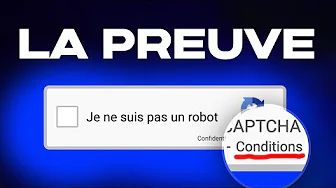

-

J'ai entraîné une IA au jeu de la pastèque (Suika Game)
V2F"J'arrivais pas à avoir de pastèque sur Suika Game. Du coup, j'ai fait ce que n'importe quelle autre personne sensée aurait fait : j'ai créé une IA qui y parviendra à ma place. On va parler PPO, Machine Learning, algortihme, .."
-
Le plus gros scandale du jeu-vidéo
Underscore_Dans cette article il nous explique comment des hackers on réussi à contourner les anti-virus grâce à un anti-cheat d'un jeu-vidéo où celui-ci nous permet d'installer des ransomware, même si nous n'avons jamais installé le jeu-vidéo sur notre PC.
-

Le Robot Anti-Feur
V2F"Quoi ? Feur. Cette blague de Twitter a assez durée ! J'ai décidé de coder quelques petits trucs pour mettre des bâtons dans les roues de ceux qui font cette blague ! Dans cette vidéo, je te montre ce que j'ai programmé avec le langage de programmation Python (principalement, mais j'y code aussi des sites web en Javascript) !""
-

Notre trouvaille scandaleuse sur les Captchas
Underscore_Cette vidéo nous parle de la sécurisation des sites et aplications souvent utilisé, les capctchas, c'est quoi un captcha, comment on peut les détrourner, pourquoi ils ne marcheront jamais,...